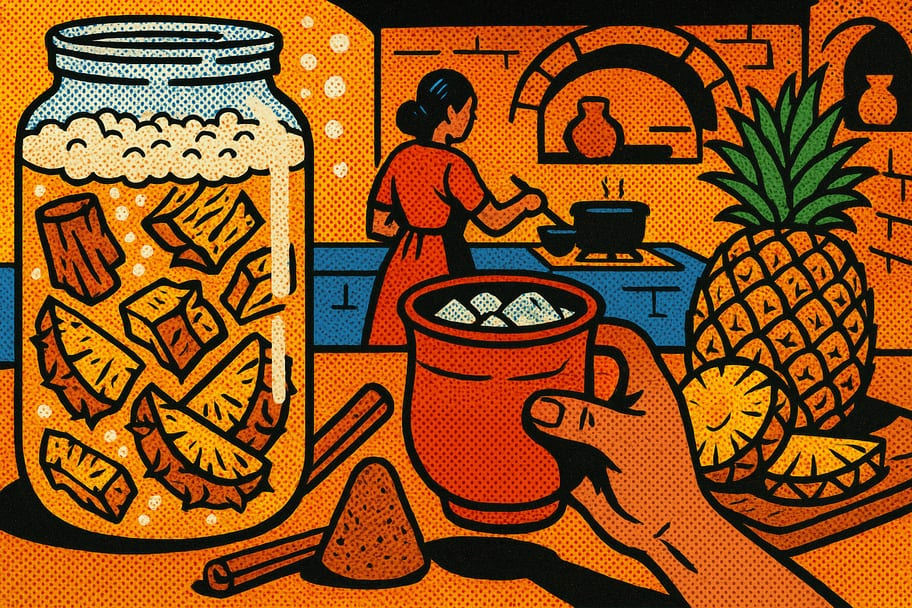

Cómo hacer tepache casero de piña
El tepache es una bebida refrescante y fermentada que puedes hacer en casa con piña y azúcar. Es ideal para disfrutar en reuniones o simplemente para refrescarte en días calurosos. Cualquiera puede hacerlo, solo necesitas paciencia y los ingredientes adecuados.

🧰 Materiales necesarios
- ☐ 1 piña madura
- ☐ 2 tazas de azúcar moreno
- ☐ 2 litros de agua
- ☐ 1 rama de canela
- ☐ 1 taza de cáscaras de piña
- ☐ 1 frasco grande de vidrio (2 litros)
- ☐ 1 tela limpia para cubrir
📋 Paso a paso
-
1Preparar la piña
Lava bien la piña y pélala, reservando las cáscaras. Corta la pulpa en trozos pequeños para que fermenten mejor.
-
2Mezclar los ingredientes
En un frasco grande de vidrio, coloca las cáscaras de piña, la pulpa, el azúcar y la canela. Agrega el agua y mezcla bien para disolver el azúcar.
-
3Cubrir el frasco
Cubre el frasco con una tela limpia para permitir la entrada de aire, pero evita que entren insectos. Asegúrate de sujetar la tela con una goma o hilo.
-
4Fermentar
Deja el frasco en un lugar fresco y oscuro durante 3 a 5 días. Revísalo diariamente y mezcla suavemente con una cuchara limpia para ayudar a la fermentación.
-
5Probar el tepache
Después de 3 días, prueba el tepache con una cuchara. Si te gusta el sabor, es momento de colarlo. Si prefieres un sabor más fuerte, déjalo fermentar por un día más.
-
6Colar el tepache
Usa un colador o un paño limpio para separar el líquido de las cáscaras y la pulpa. Asegúrate de extraer todo el líquido posible.
-
7Envasar y refrigerar
Vierte el tepache en botellas limpias y ciérralas bien. Guarda en el refrigerador para que se conserve y esté bien fresco.
-
8Servir y disfrutar
Sirve el tepache en un vaso con hielo y disfruta de esta deliciosa bebida refrescante. Puedes decorar con rodajas de piña o canela.
💡 Consejos y variaciones
- Usa piñas maduras para un mejor sabor.
- Si prefieres un tepache más dulce, añade más azúcar al gusto.
- Puedes experimentar con otras frutas de temporada como mango o guayaba.
¿Te fue útil esta guía?
Compártela en tu comunidad y visita más recursos en Guardianes del Pulque.
← Más recursos 💚 Donar